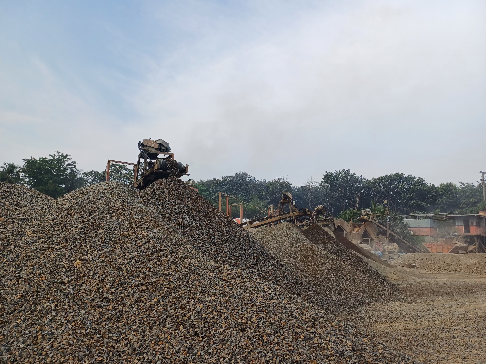
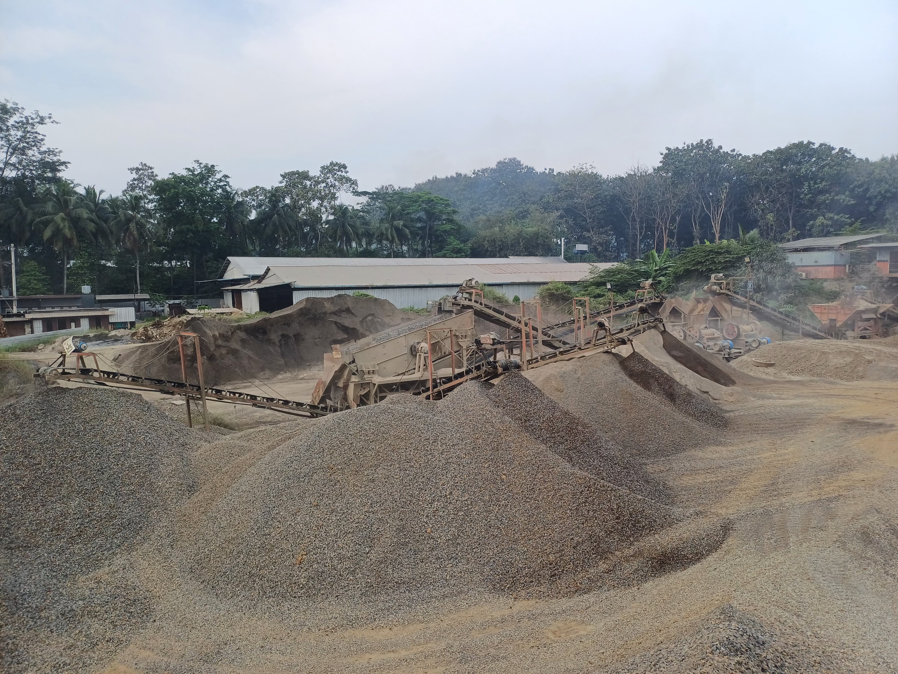
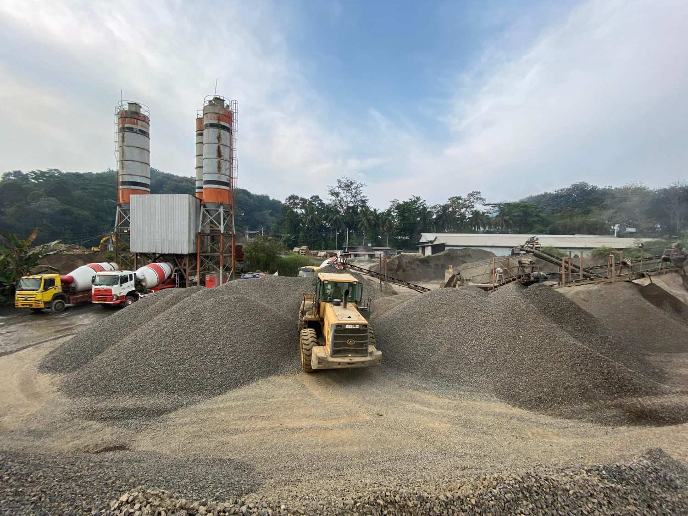
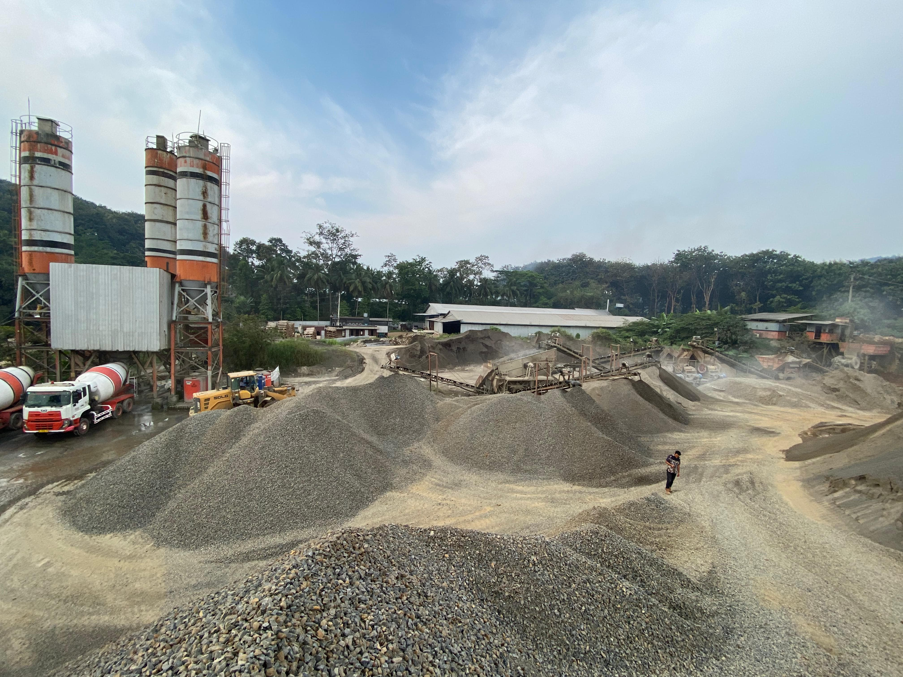

Produk Bahan Galian (Crushed Stone)
Informasi lengkap tentang produk Bahan Galian dari PT Varia Usaha Beton.
Perusahaan mempunyai areal pertambangan batu adhesit seluas 14,5 hektar yang terletak di Desa Sumber Suko, Pasuruan, Jawa Timur.
Produk yang dihasilkan yaitu :
- Bahan Galian mesin berbagai ukuran
- Base Coarse
Produk ini sebagian besar diserap para kontraktor dan produsen lainnya untuk mendukung kegiatan proyek sarana/prasarana dan sebagian untuk kebutuhan sendiri.
Sebagai salah satu unsur bahan baku utama dari produk beton, maka pengembangan usaha ke daerah lain akan terus diupayakan.
Galeri Produk Bahan Galian
Berikut beberapa contoh visualisasi produk kami:



